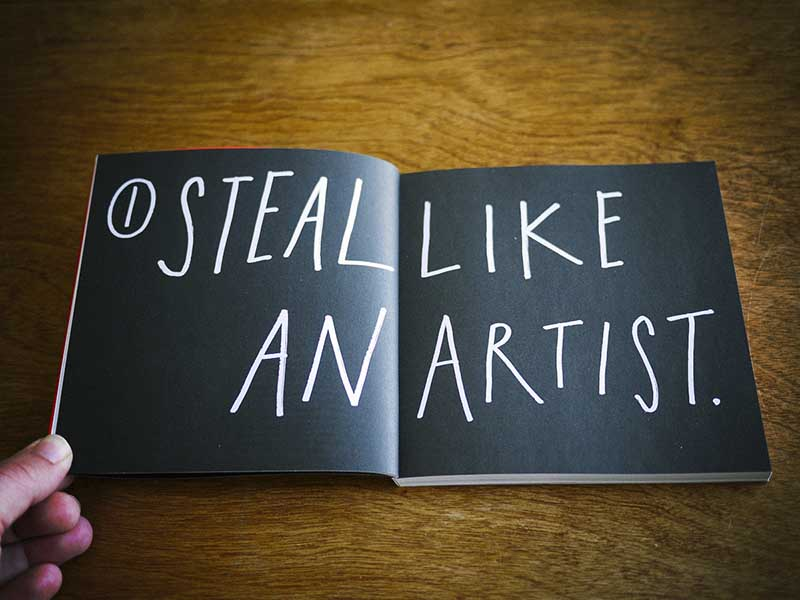
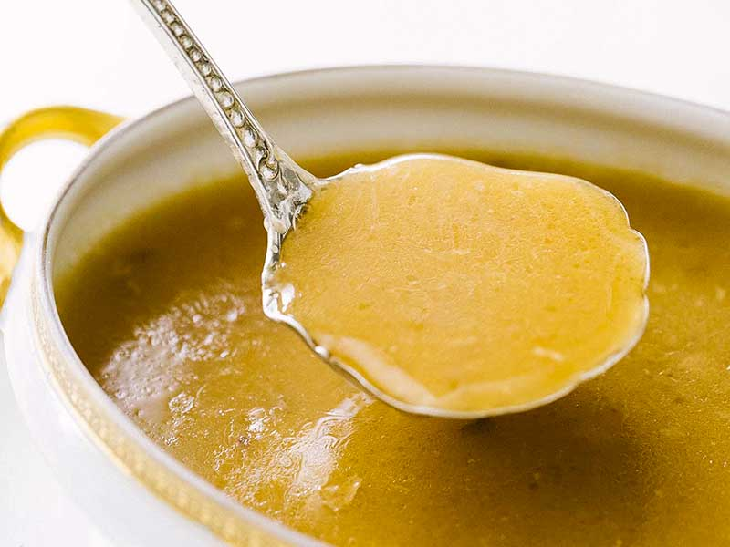
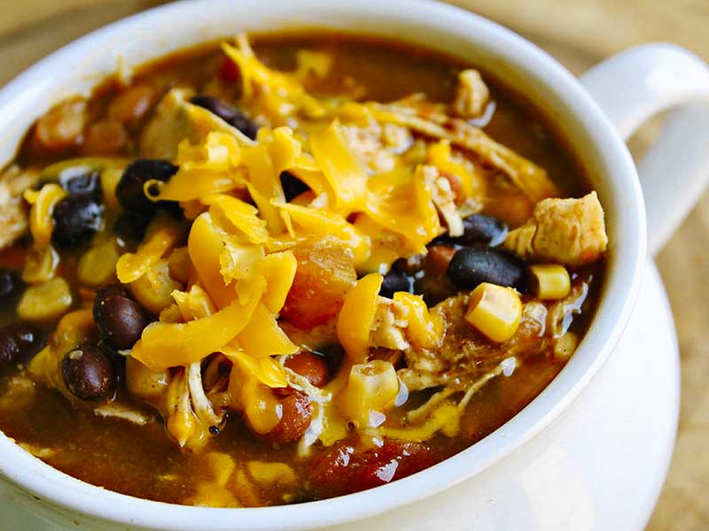

Tyreil
It took me 6 years to finish college. Half of that time was spent in classes that didn't really interest me. I was a pre-nursing major. I didn't know what i wanted to do, and the healthcare industry seemed like a safe route.
While I was waiting to get into nursing school, I took design classes; partly because I wanted to continue to get student loans (#RAGRETS) and because I wanted to take fun classes. I never looked back.
During my brief time in the industry, I was able to experience most everything the industry has to offer: Designing for a small studio, working in-house, and working in a traditional agency setting. I always knew that i wanted to teach, I just didn't realize the opportunity would come so soon.
"I always knew that i wanted to teach, I just didn't realize the opportunity would come so soon."
When I accepted the lecturer positon, I told myself that I would continue to pursue industry work, in order to stay relevant. This is a must for me.
This is my bible. I've read it cover to cover several times. If I could, I would buy it for each of my students. If you're reading this, buy this book today. You won't regret it.
I grew up in a house where there was Thai food cooked constantly, but I was too picky to eat it. Now it's my favorite food. #ragrets
I always thought mashed potatoes were my favorite food. I was wrong. I love gravy. Broths in general. It's probably why I love curry.
Beans. Someone please tell me how I can mix my love of curry with my love of beans.